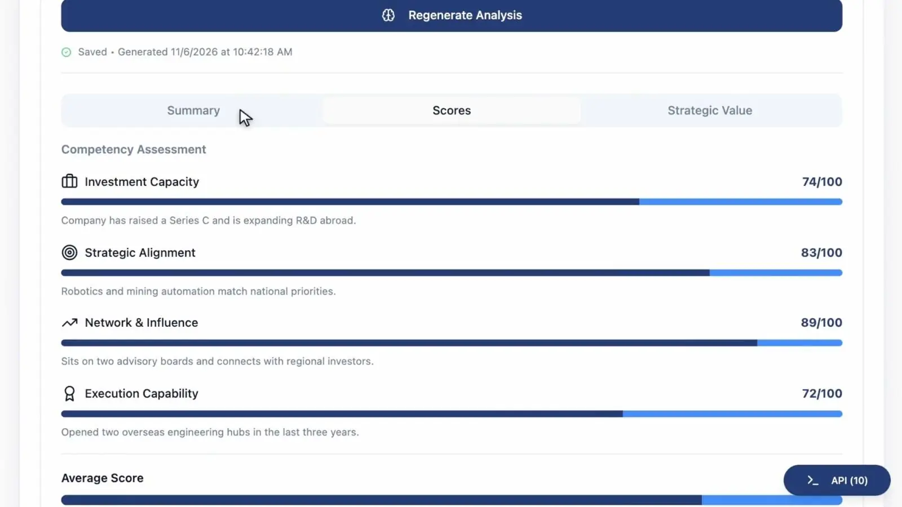
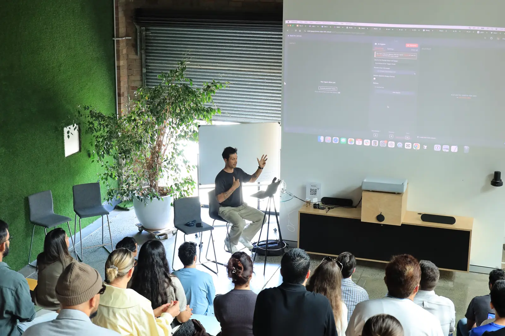
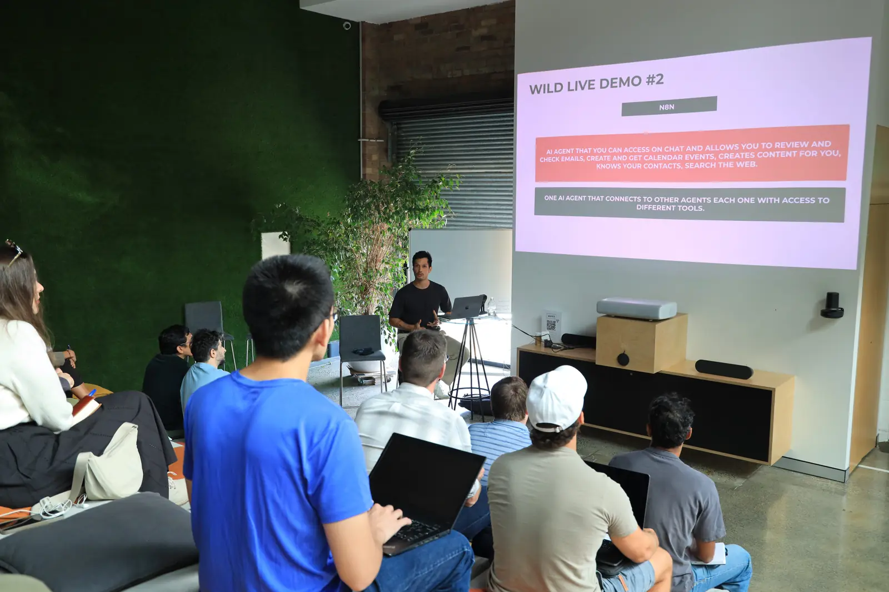
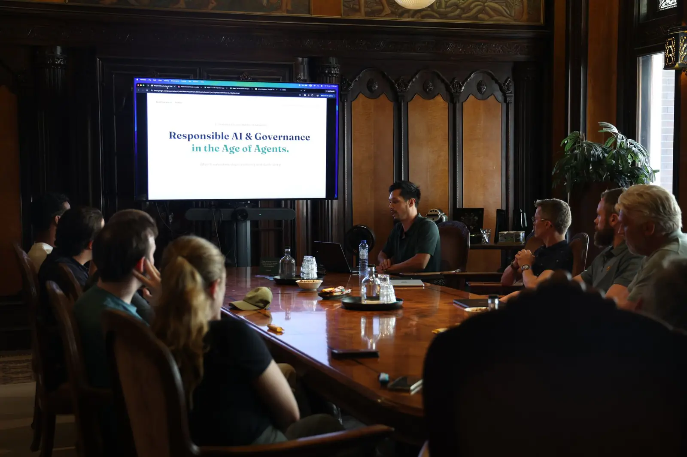

AI strategy, governance & implementation / Sydney, Australia
We help organisations find where AI is worth using, put the right safeguards around it, and build systems their teams trust and use.
Working systems, not slide decks.
Based in Sydney · 14+ years in the field
Featured project
Government Talent Search.
An intelligence tool that helps government agencies find diaspora professionals abroad, assess them with AI and engage them for talent return or investment.
Selected work
Selected work.
Software we’ve built, running. We’d rather show you than tell you: four systems we designed and built.

Field notes
In our words.
The work that lasts rarely begins with a grand “AI transformation.” It starts with one small, frequent piece of work that people are genuinely tired of doing by hand. The first version does not need to do everything. It needs to remove one useful slice of the work. Small wins are not small if they change a weekly habit.
“Where a file is stored and where an AI model processes it can be different.”
Australian hosting is only half the answer.Field note · GovernanceIntegrated Platforms
AI strategy, training, automation, software, governance and leadership for organisations in Australia and beyond, delivered from Sydney.



What we do
Services.
Six services, one connected approach. Start wherever you are: finding the first use case, building your team’s confidence, automating a process, building software, setting the rules or giving AI an owner.
AssessAI strategy & opportunity assessment
Find the right place to start. We review how work gets done, find where AI can add value and give you a roadmap ranked by impact, feasibility and risk.
02EnableAI training & enablement
Give your people the confidence to use AI well. Briefings, workshops and role-based training built around the work your teams actually do.
03ImplementAI automation & agentic systems
Put AI to work inside your operations. We design and build AI workflows, agents and integrations that connect to the systems and data you already use.
04BuildCustom software & MCP development
Production-ready software, built around your work: complete applications, and custom MCP servers that connect Claude and ChatGPT to your own systems and data.
05GovernAI governance & risk
Put clear rules and accountability around AI. Policies, risk assessments and human oversight, sized to how your organisation actually uses AI.
06LeadFractional AI leadership
Senior AI leadership without a full-time hire. Ongoing guidance on priorities, vendors, governance and delivery, so AI has a clear owner.
Not sure which service you need? Tell us the problem and we’ll suggest where to start.
Who we work with
Who we work with.
Organisations that want AI to make a practical difference, from leadership teams setting a direction to operators with a process to fix.
01
Leadership teams
Setting an AI direction, evaluating investments and deciding what to build, buy, integrate or defer.
02
Government agencies
Purpose-built tools for agencies, investment promotion bureaus and economic development institutions.
03
Operations teams
Repetitive, information-heavy processes turned into workflows, with human review and escalation built in.
04
Marketing and content teams
Planning, approvals, reporting and on-brand drafting in one place, with a person approving what goes out.
05
Recruitment and sales
Signals found and verified across sources, with the right person to contact and a reason to call.
06
Teams using Claude or ChatGPT
Custom MCP servers, so the assistant your team already uses can work with your own systems and data.
How we work
From pilot to production.
Useful AI isn’t a one-off build. We work across the whole cycle, so nothing stalls between the plan and the people using it.
-
01
Discover the opportunity
Value, feasibility, risk
We map the process, talk to the people doing the work and rank opportunities by value, feasibility and risk.
-
02
Set the guardrails
Before anything goes live
Data access, privacy, security and human oversight are agreed before anything goes live.
-
03
Design and build
Around your systems
We build workflows, agents, integrations and internal tools around your existing processes and systems.
-
04
Enable adoption
Training and clear roles
We train the people who’ll use it and make clear who reviews what, and when to escalate.
-
05
Measure and improve
Against the agreed measure
We track performance and adoption against the agreed measure of success, then refine.

Founder & Principal
Meet Rodrigo.
Integrated Platforms brings 14+ years in the field across four markets: Australia, Canada, Chile and the US. Rodrigo Gutiérrez, our founder and principal, writes our field notes and works alongside Maria R Alcalá, our Chief Marketing Officer.
More about usOur thinking
Field notes.
Short guides on AI strategy, governance and adoption from Rodrigo Gutiérrez, our founder.
1 task
Your first automation should be boring.
Pick the repeat, keep review in place, then earn the next step.
Working with AI
3 steps
Map the process before you touch AI.
Pick one task, time it honestly and write the walkthrough.
Opportunity assessment
4 parts
A wish is not an instruction.
Role, steps, decision rules and output: the difference between a prompt and repeatable work.
AI delivery
TRACE
Australian hosting is only half the answer.
Five questions to ask any AI vendor about where your information goes.
Governance
Based in Sydney
Sydney, working worldwide.
Integrated Platforms is based in Sydney and works with organisations across Australia and internationally. Talk to us.
Each line runs from our base in Sydney to a market we’ve worked in over 14+ years in the field.
4 markets · 1 base
Markets we’ve worked in (4)
- AustraliaHome market, Sydney
- CanadaWorked in
- ChileWorked in
- United StatesWorked in
Questions
Questions, answered.
Something else on your mind? Ask us directly or email hello@integratedplatforms.com.au.
We’re not sure which service we need. Where do we start?
You don’t need to know. Tell us what you’re trying to improve and what you’ve tried so far. We’ll suggest a sensible first step, whether that’s an assessment, a workshop or a build.
Do you advise, or do you build?
Both. We assess opportunities and set up governance, and we design and build the systems too: AI workflows, agents, integrations, production software and custom MCP servers for Claude and ChatGPT. See what we’ve built.
Do we need to replace our existing systems?
No. We design around the systems, data and processes you already use, and connect AI to them where it adds value.
How do you handle our data and privacy?
Data access, privacy, security and human oversight are agreed before anything goes live, and the controls are matched to the use case. Our governance work complements legal advice and specialist security testing; it doesn’t replace them.
How are engagements scoped and priced?
Scope, responsibilities and deliverables are agreed before work begins. An engagement can be a defined project, a training programme or an ongoing advisory arrangement.
Where are you based?
Sydney. We work with organisations across Australia and internationally.
Ongoing AI leadership
The questions we answer.
You don’t need another AI tool. You need a plan for making AI work. Fractional AI Leadership gives you an experienced partner who keeps AI tied to business outcomes.
- Where should we invest in AI?
- Which opportunities should come first?
- What should we build, buy or integrate?
- How do we manage risk and accountability?
- How do we help teams adopt new ways of working?
- How will we know whether it’s working?
Contact Integrated Platforms
Find the right AI opportunity for your organisation.
We’ll start with the problem, not a product pitch.